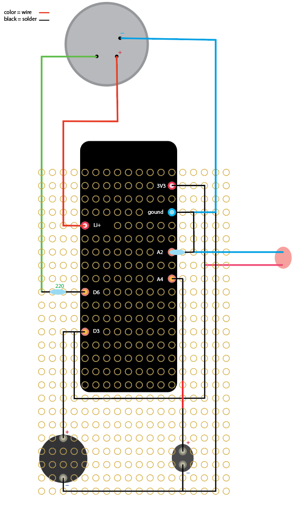
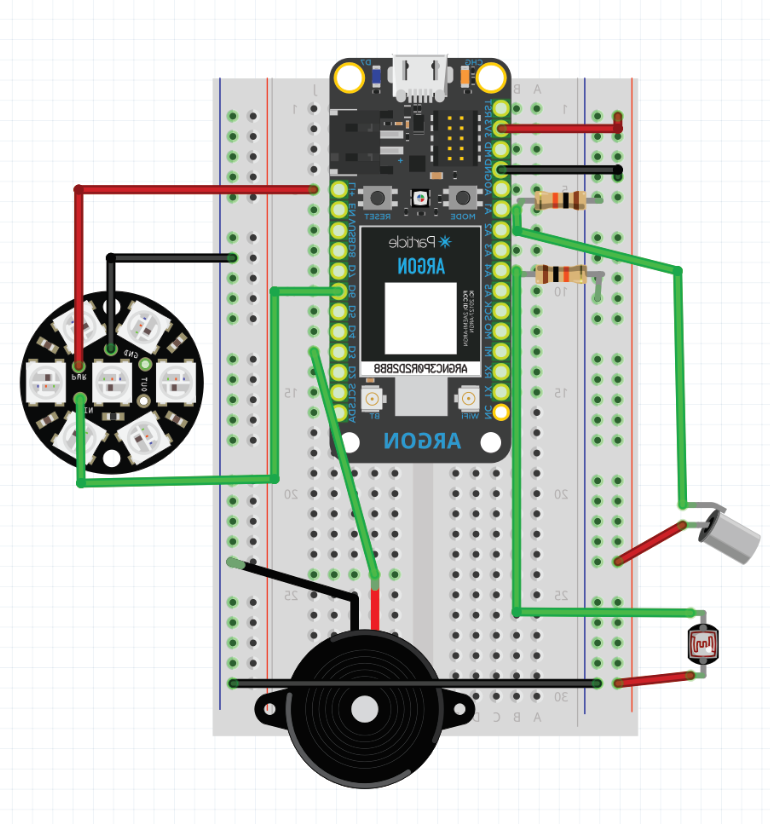
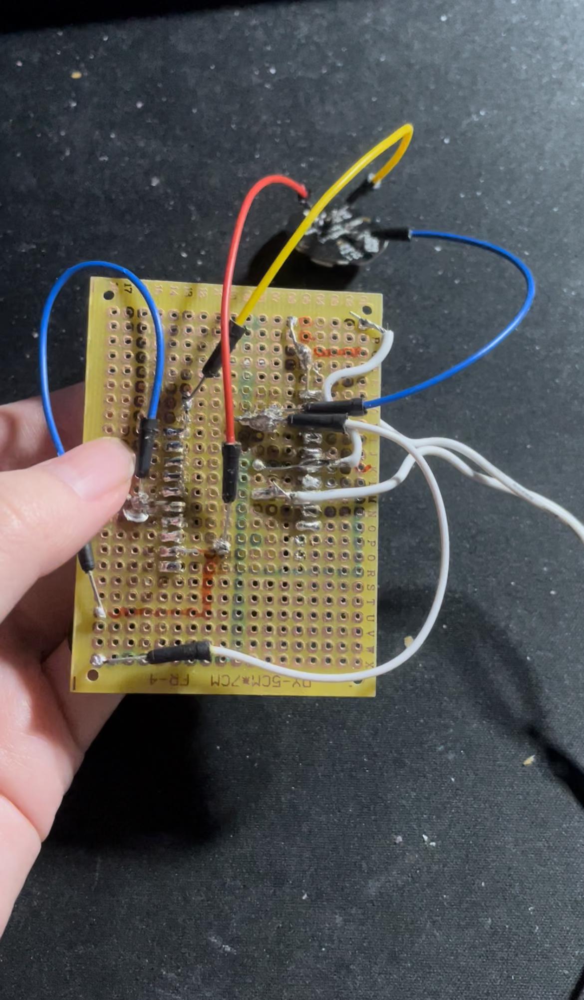

The Process
revisions
- Focus + Project name change
as the focus was shifted to the interactions rather than the distance between the users, the name of the project was appropriately renamed from ProxyU to withU
- Tilt interaction
to enchance the interaction, instead of having two types of inputs from the tilt sensor, each movement wil cycle through colors.
- Asynchronus Interactions
as there were some unresolved issues the devices sending data to the cloud (overload of inputs, frequent pausing), the devices are set to publish their current state on set intervals
test/mockup builds
process to understand how the wiring of the artifact works when taken out of the breadboard

initial build on breadboard
faulty: connecting power to ground led to short circuits
provided by Elio Bidinost
physical build

code
link to access the full code, written on Virtual Studio Code
final thoughts
The project is still far from being complete, but the basis of the intended structure of the artifact is laid down. There has been a lot of testing and coding to ensure that the devices can communicate through the cloud. There is a lot more to be explored to enrich the interaction users can have with the devices. The physical design of the artifact is still not determined.
picture album

soldering at home (failure)

working in the metro during a 3 hour delay